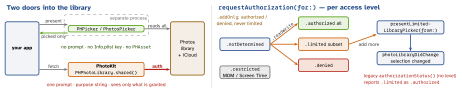

ios-platform · folio
In one line: Two ways in. The out-of-process picker (PHPickerViewController 14, SwiftUI PhotosPicker 16)
needs no permission — the app gets only the picked items. PhotoKit (PHPhotoLibrary,
PHAsset, PHImageManager) is a live database behind authorization: .readWrite — which may
come back .limited, a user-chosen subset (iOS 14) — or .addOnly. Picker unless you are
a gallery, backup or editor app.
Download PDF Print view LaTeX source


Door 1 — the picker
- Result =
PHPickerResult.itemProvider(UIKit) orPhotosPickerItem(aTransferableplaceholder). UIKit:didFinishPickingfires on Add and Cancel — you dismiss. - Config:
selectionLimit(default 1, 0 = no limit);filter.images.videos.livePhotos.screenshots, combined by.any(of:).all(of:).not; encoding.current(keep HEIC) vs.compatible(transcode). - IDs are
nilunless built withinit(photoLibrary: .shared())— required forpreselectedAssetIdentifiers(15); fetching thatPHAssetstill needs authorization. - Embedded, iOS 17:
.photosPickerStyle(.inline),selectionBehavior: .continuous(live, no Add button),.photosPickerDisabledCapabilities([.search, .stagingArea]).
Example — picker, no permission
PhotosPicker(selection: $items, maxSelectionCount: 5,
matching: .all(of: [.images, .not(.screenshots)]),
preferredItemEncoding: .compatible) { Label("Add", systemImage: "photo") }
.task(id: items) {
for item in items { // Image.self: PNG/JPEG only
guard let d = try? await item.loadTransferable(type: Data.self)
else { continue } // nil = type not offered
thumbs.append(downsample(d, maxPixels: 600)) } } // never full sizeVideo: FileRepresentation / loadFileRepresentation — temp file deleted when the handler returns.
Door 2 — PhotoKit
PHAsset= metadata (mediaType,pixelWidth,creationDate,localIdentifier);PHAssetCollection= album;PHAssetResource= the original files.fetchAssets→PHFetchResult: lazy, thread-safe, a snapshot (count fixed) — updates come asPHChange, often on a background queue.requestImage(for:targetSize:contentMode:options:): size in pixels; keep thePHImageRequestID,cancelImageRequeston reuse.isNetworkAccessAlloweddefaults false → iCloud-only asset:PHImageResultIsInCloudKey, no image.PHCachingImageManager:startCachingImagesfor rows about to appear — then request with the same size, mode, options, or it misses.- Writes only in
performChanges {}(creation / change requests,deleteAssets); runs on a serial background queue; editing or deleting shows a confirmation per call — batch.
Which door?
Avatar, attachment, “import to edit” → picker. Own gallery, backup, bulk edit → .readWrite, designed for .limited too. Camera app that only saves → .addOnly. Original bytes / RAW: PHAssetResourceManager.writeData(for:toFile:options:).
Example — a PhotoKit grid
let s = await PHPhotoLibrary.requestAuthorization(for: .readWrite)
guard s == .authorized || s == .limited else { return showSettings() }
assets = PHAsset.fetchAssets(with: .image, options: newestFirst)
PHPhotoLibrary.shared().register(self) // PHPhotoLibraryChangeObserver
// cell: set the id BEFORE asking - the 1st callback can be synchronous
cell.assetID = asset.localIdentifier
cell.req = caching.requestImage(for: asset,
targetSize: CGSize(width: side * scale, height: side * scale),
contentMode: .aspectFill, options: opts) { img, info in
guard cell.assetID == asset.localIdentifier else { return } // reused
cell.image = img } // called twice: degraded, then finalOne request, two answers
Live grid: change.changeDetails(for: old) → on main swap in fetchResultAfterChanges; hasIncrementalChanges ? batch removed → inserted → moves → changed : reloadData().
Keys and the limited library
NSPhotoLibraryUsageDescription | .readWrite: read, edit, add |
NSPhotoLibraryAddUsageDescription | .addOnly (iOS 11): save only |
PHPhotoLibraryPrevent-AutomaticLimitedAccessAlert | YES = no auto “select more” prompt (default once per life cycle) |
picker, PhotosPicker | nothing |
.limited: fetches see only the selection; no user albums; assets you create join it; presentLimitedLibraryPicker (15: returns new ids) grows it. IDs: localIdentifier is per device — PHCloudIdentifier (15) across devices. 26.1: PHBackgroundResourceUploadExtension (backup apps).
Traps
- Full library access to set an avatar — the picker needs no prompt and no key.
authorizationStatus()without a level:.limitedreads.authorized— “why 3 photos?”Image’sTransferableis PNG + JPEG only — loadDataor your own type.targetSizein points, orPHImageManagerMaximumSizefor a thumb: 48 MB per 12 MP.- Cancel after preselection returns the preselected ids, not
[].
Remember
“Picker: no permission. PhotoKit: prompt, limited = subset. Pixels, twice, back to main.”